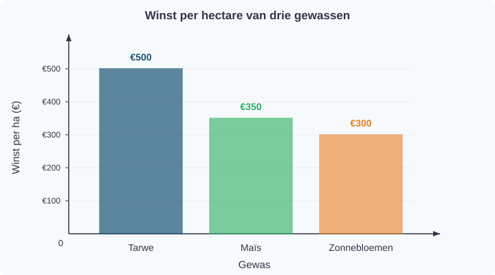

Schaarste en economisch denken — Voorkennis
Wat moet je al kunnen voordat je aan deze paragraaf begint?
Vermenigvuldigen en aftrekken met euro’s
In de economie reken je voortdurend met bedragen. Meestal gaat het om twee eenvoudige bewerkingen: vermenigvuldigen (bijvoorbeeld een opbrengst per stuk keer het aantal stuks) en aftrekken (bijvoorbeeld om te kijken hoeveel je overhoudt, of wat het verschil is tussen twee opties). Je kent deze operaties natuurlijk allang — we frissen ze kort op in een economische context.
Vermenigvuldigen gebruik je als je een bedrag per eenheid hebt en je wilt weten wat het in totaal oplevert:
voorbeeld: 8 hectare × €500 per hectare = €4.000
Aftrekken gebruik je als je het verschil tussen twee bedragen wilt weten — bijvoorbeeld tussen wat een keuze oplevert en wat de andere optie zou hebben opgeleverd:
voorbeeld: €5.000 − €3.500 = €1.500
Uitgewerkt voorbeeld
Een boer heeft 10 hectare land en verbouwt tarwe met een opbrengst van €500 per hectare. Hoeveel levert het hem in totaal op?
| Vermenigvuldigen | totaal = aantal × bedrag per eenheid |
| Aftrekken | verschil = bedrag A − bedrag B |
| Toepassing | totale opbrengst en verschil tussen twee alternatieven uitrekenen |
Wat is een staafdiagram?
Een staafdiagram is een grafiek waarin je losse categorieën (bijvoorbeeld verschillende gewassen, producten of landen) naast elkaar ziet, elk met een eigen staaf. De hoogte van de staaf laat zien hoeveel er van die categorie is — bijvoorbeeld de opbrengst per hectare of het aantal verkochte eenheden. Je kent dit type grafiek al uit de onderbouw; we gebruiken het in economie om snel alternatieven met elkaar te kunnen vergelijken.
Drie dingen moet je altijd eerst bekijken voordat je iets aflast:
Voorbeeld: winst per hectare
In het staafdiagram hieronder zie je de winst per hectare voor drie gewassen die een boer kan verbouwen. Op de x-as staan de drie gewassen, op de y-as de winst per hectare in euro’s.

Voorbeeld van aflezen: trek vanaf de top van de maïs-staaf een denkbeeldige horizontale lijn naar de y-as. Daar lees je de winst per hectare van maïs af. Doe hetzelfde voor tarwe en zonnebloemen, en je kunt direct zien welk gewas het meest oplevert per hectare.
| X-as | De categorieën die je vergelijkt (bijv. gewassen) |
| Y-as | De hoeveelheid met eenheid (bijv. € per hectare) |
| Staaf | Hoogte = de waarde; aflezen naar de y-as |
| Schaal | Let op waar de as begint en in welke stappen hij oploopt |
Je kiest al elke dag — vaak zonder erbij stil te staan
Voor de economieles heb je nog geen economische theorie nodig om te snappen wat kiezen onder beperkingen is. Dat doe je al iedere dag. Je zakgeld is beperkt, je vrije tijd is beperkt, de ruimte in je tas is beperkt — en precies daarom moet je voortdurend kleine keuzes maken. Die ervaring vormt de intuïtie die je in §1.1.1 netjes in economische termen leert vangen.
Drie alledaagse situaties waarin je al onbewust economisch kiest:
Wat gebeurt er in je hoofd als je kiest?
Meestal kijk je eerst wat je opties zijn, daarna schat je in wat elke optie je oplevert (plezier, een goed cijfer, tijd met vrienden), en ten slotte kies je de optie die je het meest waard is. Ondertussen besef je — vaak zonder het bewust uit te spreken — dat je de andere opties opgeeft. Dit gevoel van “ik kan niet alles” is de intuïtie die economen vangen in het begrip schaarste en waarmee je in §1.1.1 gaat leren rekenen via alternatieve kosten.
| Beperkte middelen | Geld, tijd en ruimte zijn nooit onbeperkt |
| Keuze maken | Opties vergelijken en de beste kiezen |
| Opgeven | Wat je niet kiest, loop je mis — dat hoort erbij |
Controleer of je de volgende zaken beheerst voordat je aan de paragraaf begint: